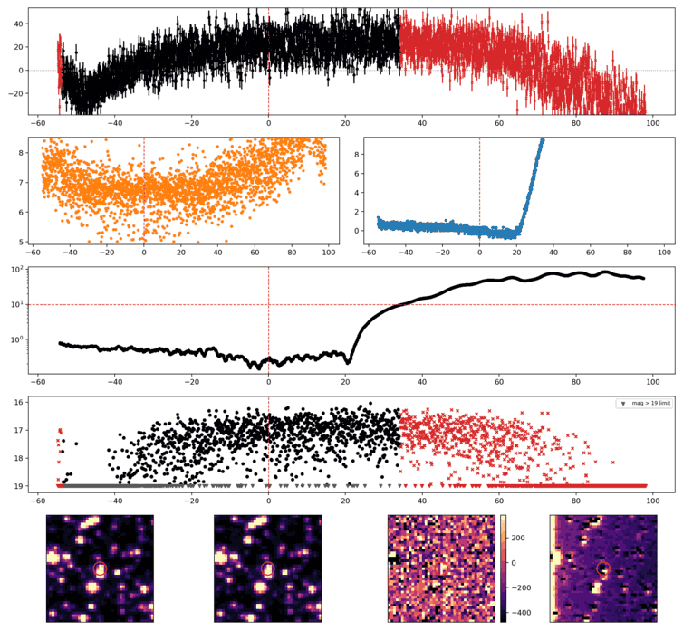
Search centered on refined position (182.1730580, -45.6741660 deg). Gaia coordinates are at J2016.0; proper motions are shown, without epoch propagation. A positional match does not change the candidate flags.
| Source ID / catalog entry | Separation (arcsec) | RA (deg) | Dec (deg) | G (mag) | BP (mag) | RP (mag) | Parallax ± error (mas) | PM RA* ± error (mas/yr) | PM Dec ± error (mas/yr) | RUWE | Variability |
|---|---|---|---|---|---|---|---|---|---|---|---|
| 6143419210430815872 | 2.809 | 182.1723217 | -45.6735794 | 20.195 | 20.691 | 18.956 | 0.420 ± 0.641 | 1.516 ± 0.510 | -0.862 ± 0.566 | 1.057 | NOT_AVAILABLE |
Retrieved 2026-11-03T12:21:39.659781+00:00
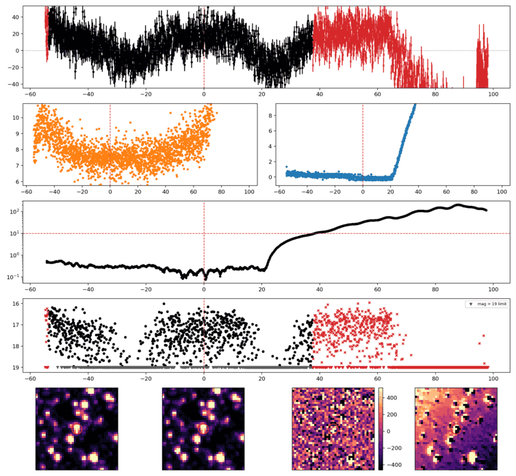
Search centered on refined position (152.0771260, -46.8989851 deg). Gaia coordinates are at J2016.0; proper motions are shown, without epoch propagation. A positional match does not change the candidate flags.
| Source ID / catalog entry | Separation (arcsec) | RA (deg) | Dec (deg) | G (mag) | BP (mag) | RP (mag) | Parallax ± error (mas) | PM RA* ± error (mas/yr) | PM Dec ± error (mas/yr) | RUWE | Variability |
|---|---|---|---|---|---|---|---|---|---|---|---|
| 5407683989710005888 | 4.581 | 152.0788671 | -46.8985332 | 19.830 | 20.421 | 19.119 | 0.111 ± 0.311 | -4.277 ± 0.334 | 2.250 ± 0.304 | 0.999 | NOT_AVAILABLE |
Retrieved 2026-11-03T12:21:40.805061+00:00
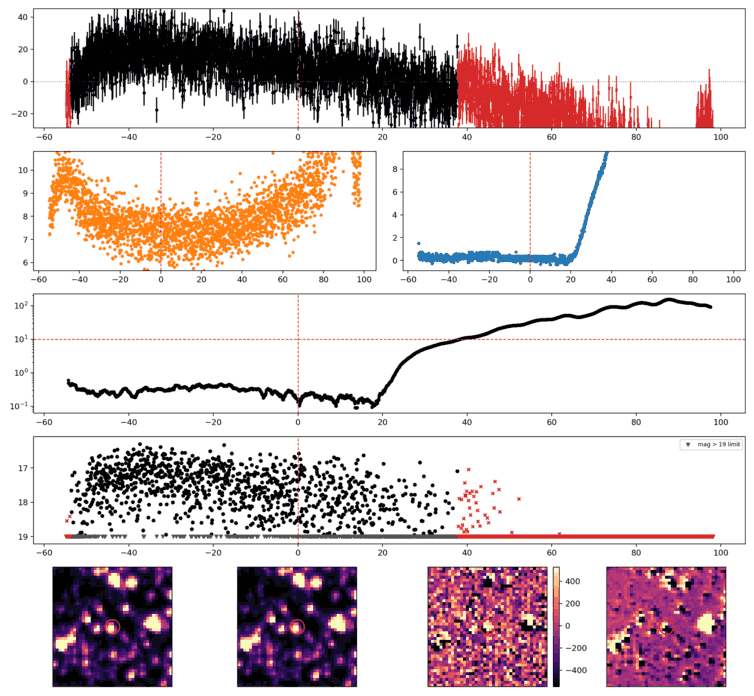
Search centered on refined position (149.3808628, -46.4152381 deg). Gaia coordinates are at J2016.0; proper motions are shown, without epoch propagation. A positional match does not change the candidate flags.
No Gaia DR3 sources found within 5 arcseconds.
Retrieved 2026-11-03T12:21:41.797613+00:00
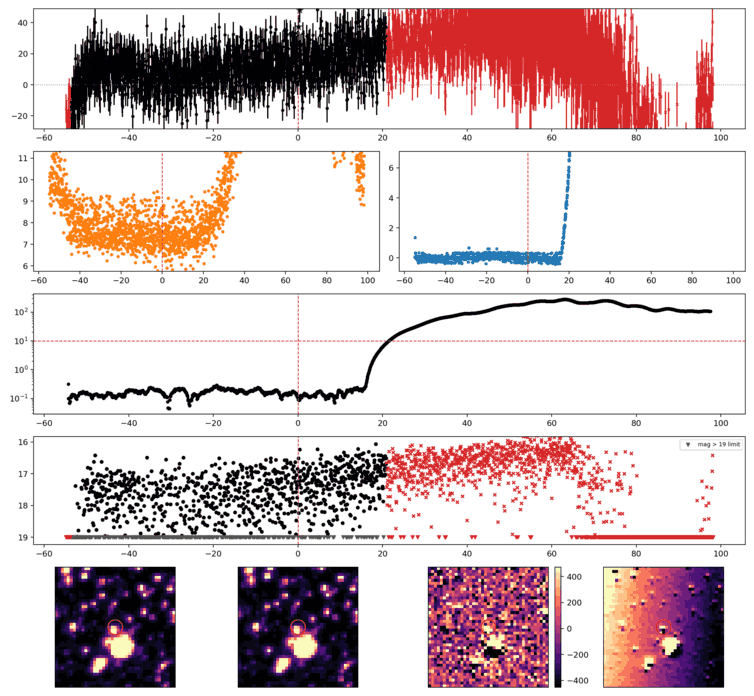
Search centered on refined position (143.5529839, -36.8021018 deg). Gaia coordinates are at J2016.0; proper motions are shown, without epoch propagation. A positional match does not change the candidate flags.
No Gaia DR3 sources found within 5 arcseconds.
Retrieved 2026-11-03T12:21:42.909245+00:00
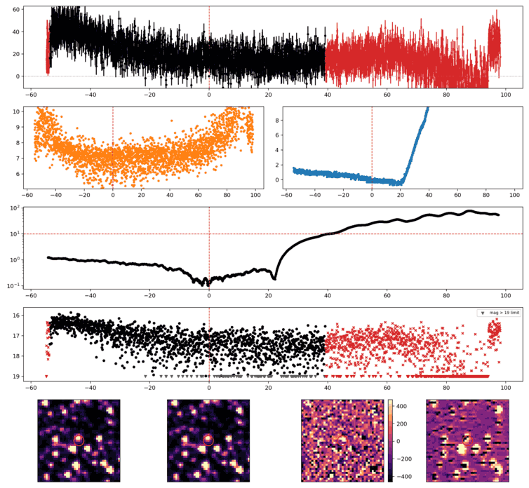
Search centered on refined position (189.4487628, -51.8342015 deg). Gaia coordinates are at J2016.0; proper motions are shown, without epoch propagation. A positional match does not change the candidate flags.
No Gaia DR3 sources found within 5 arcseconds.
Retrieved 2026-11-03T12:21:44.579433+00:00
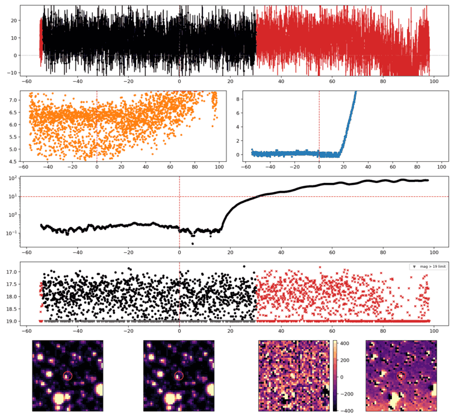
Search centered on refined position (154.1596738, -32.9835785 deg). Gaia coordinates are at J2016.0; proper motions are shown, without epoch propagation. A positional match does not change the candidate flags.
No Gaia DR3 sources found within 5 arcseconds.
Retrieved 2026-11-03T12:21:45.870262+00:00
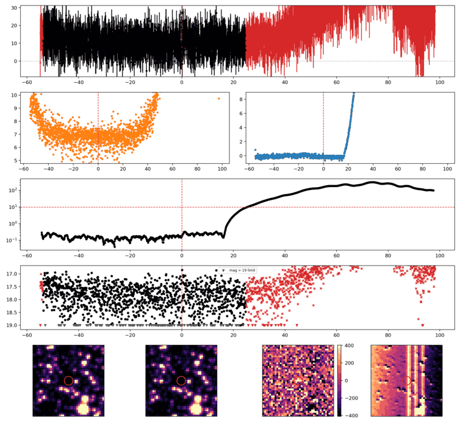
Search centered on refined position (138.1625690, -33.3820369 deg). Gaia coordinates are at J2016.0; proper motions are shown, without epoch propagation. A positional match does not change the candidate flags.
No Gaia DR3 sources found within 5 arcseconds.
Retrieved 2026-11-03T12:21:46.957196+00:00
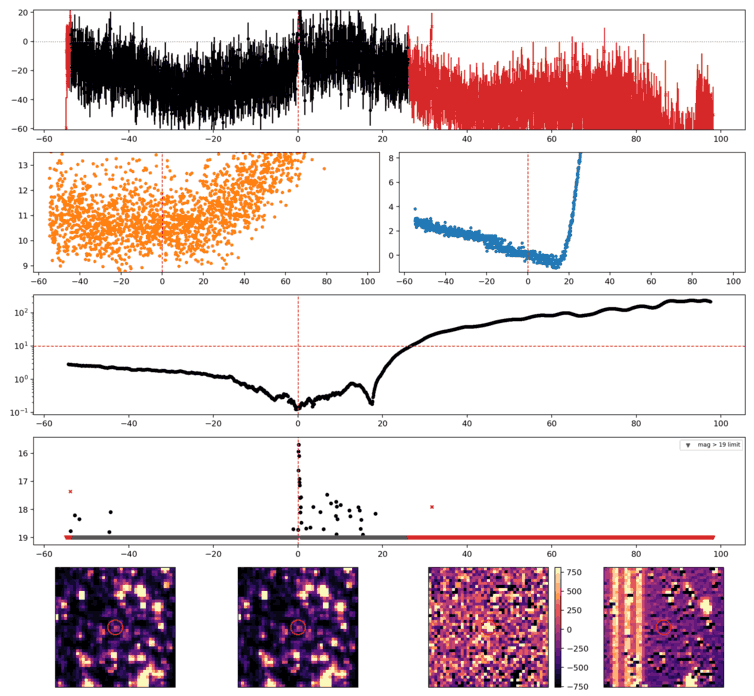
Search centered on refined position (225.6486044, -62.8395010 deg). Gaia coordinates are at J2016.0; proper motions are shown, without epoch propagation. A positional match does not change the candidate flags.
| Source ID / catalog entry | Separation (arcsec) | RA (deg) | Dec (deg) | G (mag) | BP (mag) | RP (mag) | Parallax ± error (mas) | PM RA* ± error (mas/yr) | PM Dec ± error (mas/yr) | RUWE | Variability |
|---|---|---|---|---|---|---|---|---|---|---|---|
| 5874424687167405824 | 1.223 | 225.6483663 | -62.8391791 | 13.122 | 13.554 | 12.516 | 2.768 ± 0.014 | -7.176 ± 0.013 | -14.144 ± 0.014 | 0.827 | VARIABLE |
| 5874424755860671360 | 4.453 | 225.6474115 | -62.8383903 | 20.019 | 18.889 | 17.763 | -0.251 ± 0.587 | -7.801 ± 0.560 | -6.110 ± 0.633 | 1.022 | NOT_AVAILABLE |
| 5874424687140295424 | 4.984 | 225.6502791 | -62.8383468 | 21.135 | — | — | — | — | — | — | NOT_AVAILABLE |
Retrieved 2026-11-03T12:21:56.805113+00:00
Representative chosen by category, detection count, then Gaussian S/N. Original measurements and classifications are retained below.
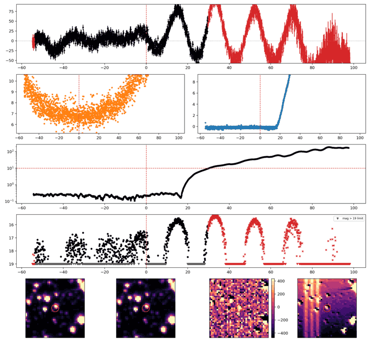
Search centered on refined position (140.8827733, -22.8753992 deg). Gaia coordinates are at J2016.0; proper motions are shown, without epoch propagation. A positional match does not change the candidate flags.
No Gaia DR3 sources found within 5 arcseconds.
Retrieved 2026-11-03T12:22:30.174852+00:00
Representative chosen by category, detection count, then Gaussian S/N. Original measurements and classifications are retained below.
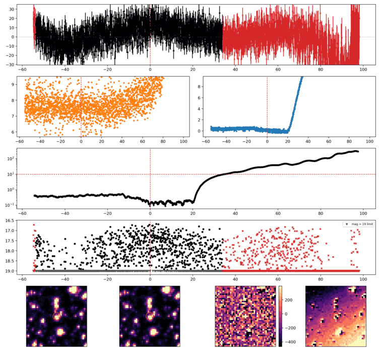
Search centered on refined position (164.0093690, -43.2527434 deg). Gaia coordinates are at J2016.0; proper motions are shown, without epoch propagation. A positional match does not change the candidate flags.
| Source ID / catalog entry | Separation (arcsec) | RA (deg) | Dec (deg) | G (mag) | BP (mag) | RP (mag) | Parallax ± error (mas) | PM RA* ± error (mas/yr) | PM Dec ± error (mas/yr) | RUWE | Variability |
|---|---|---|---|---|---|---|---|---|---|---|---|
| 5388418797940465792 | 3.415 | 164.0106710 | -43.2527226 | 12.859 | 13.243 | 12.208 | 1.956 ± 0.298 | -1.693 ± 0.215 | 0.156 ± 0.296 | 22.368 | NOT_AVAILABLE |
Retrieved 2026-11-03T12:23:00.943515+00:00
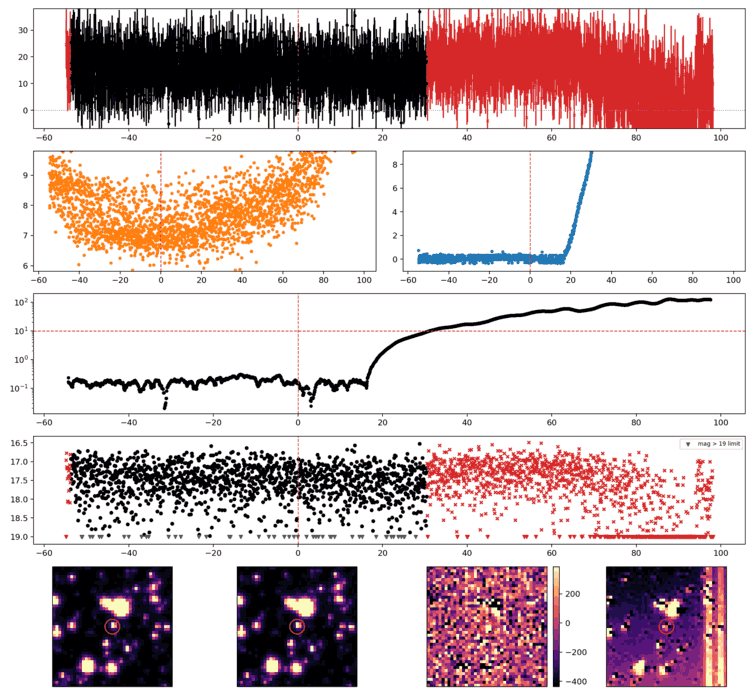
Search centered on refined position (145.6036513, -27.3980319 deg). Gaia coordinates are at J2016.0; proper motions are shown, without epoch propagation. A positional match does not change the candidate flags.
No Gaia DR3 sources found within 5 arcseconds.
Retrieved 2026-11-03T12:23:33.343144+00:00
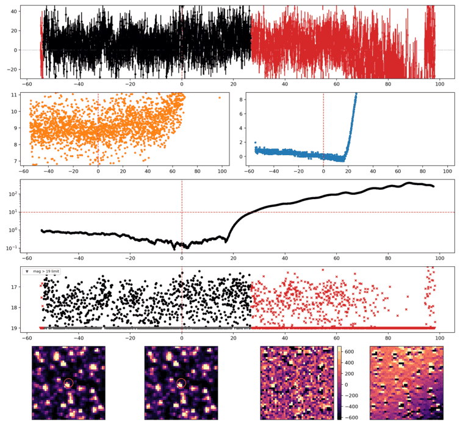
Search centered on refined position (176.2933563, -69.2701984 deg). Gaia coordinates are at J2016.0; proper motions are shown, without epoch propagation. A positional match does not change the candidate flags.
| Source ID / catalog entry | Separation (arcsec) | RA (deg) | Dec (deg) | G (mag) | BP (mag) | RP (mag) | Parallax ± error (mas) | PM RA* ± error (mas/yr) | PM Dec ± error (mas/yr) | RUWE | Variability |
|---|---|---|---|---|---|---|---|---|---|---|---|
| 5234172744083948672 | 1.062 | 176.2927737 | -69.2704092 | 20.054 | 20.729 | 19.344 | 0.045 ± 0.380 | -7.098 ± 0.496 | 0.750 ± 0.459 | 1.026 | NOT_AVAILABLE |
| 5234172744083949184 | 3.706 | 176.2945481 | -69.2711375 | 19.583 | 20.430 | 18.913 | 0.059 ± 0.282 | -4.556 ± 0.346 | 1.872 ± 0.318 | 1.112 | NOT_AVAILABLE |
| 5234172744083948416 | 4.889 | 176.2905431 | -69.2692750 | 20.430 | 20.869 | 19.336 | 0.612 ± 0.572 | -5.659 ± 0.936 | -0.959 ± 0.790 | 1.004 | NOT_AVAILABLE |
Retrieved 2026-11-03T12:23:55.658616+00:00
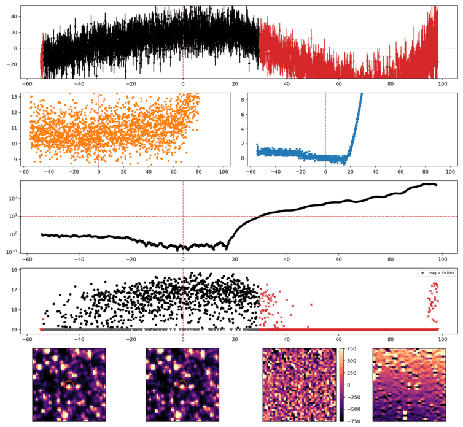
Search centered on refined position (185.7924730, -60.3239384 deg). Gaia coordinates are at J2016.0; proper motions are shown, without epoch propagation. A positional match does not change the candidate flags.
| Source ID / catalog entry | Separation (arcsec) | RA (deg) | Dec (deg) | G (mag) | BP (mag) | RP (mag) | Parallax ± error (mas) | PM RA* ± error (mas/yr) | PM Dec ± error (mas/yr) | RUWE | Variability |
|---|---|---|---|---|---|---|---|---|---|---|---|
| 6058292408906226944 | 1.087 | 185.7930011 | -60.3237876 | 19.366 | 20.138 | 18.134 | 0.290 ± 0.276 | -7.889 ± 0.272 | 0.267 ± 0.275 | 1.042 | NOT_AVAILABLE |
Retrieved 2026-11-03T12:24:13.422300+00:00
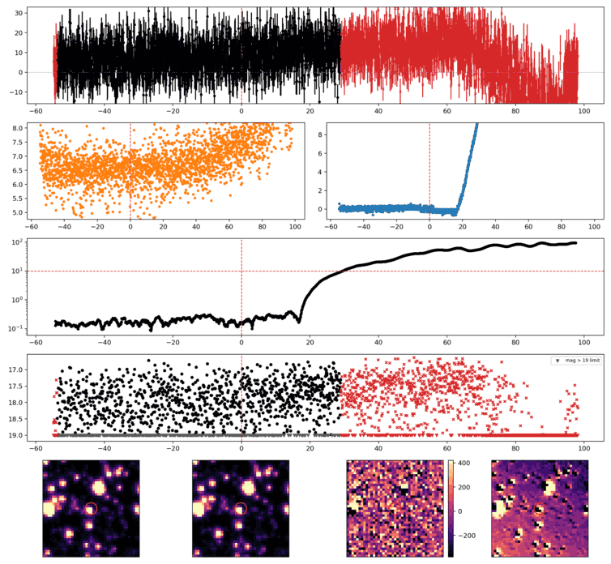
Search centered on refined position (158.2827014, -34.1603418 deg). Gaia coordinates are at J2016.0; proper motions are shown, without epoch propagation. A positional match does not change the candidate flags.
No Gaia DR3 sources found within 5 arcseconds.
Retrieved 2026-11-03T12:24:17.577056+00:00
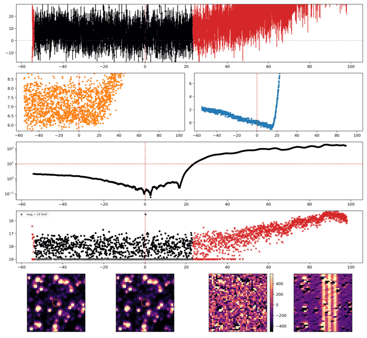
Search centered on refined position (230.5299101, -70.7642429 deg). Gaia coordinates are at J2016.0; proper motions are shown, without epoch propagation. A positional match does not change the candidate flags.
| Source ID / catalog entry | Separation (arcsec) | RA (deg) | Dec (deg) | G (mag) | BP (mag) | RP (mag) | Parallax ± error (mas) | PM RA* ± error (mas/yr) | PM Dec ± error (mas/yr) | RUWE | Variability |
|---|---|---|---|---|---|---|---|---|---|---|---|
| 5795912650613617920 | 2.916 | 230.5274622 | -70.7641680 | 16.501 | 16.926 | 15.916 | 0.188 ± 0.046 | -8.731 ± 0.038 | -4.246 ± 0.047 | 1.008 | NOT_AVAILABLE |
| 5795912650610752512 | 4.053 | 230.5325957 | -70.7635465 | 20.502 | 21.024 | 20.061 | 0.426 ± 0.731 | -4.041 ± 0.603 | -3.759 ± 0.718 | 1.061 | NOT_AVAILABLE |
Retrieved 2026-11-03T12:24:20.018384+00:00
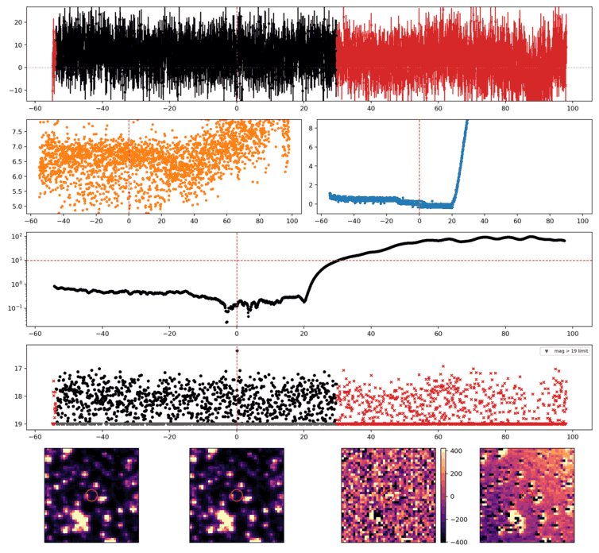
Search centered on refined position (180.3048713, -47.1213139 deg). Gaia coordinates are at J2016.0; proper motions are shown, without epoch propagation. A positional match does not change the candidate flags.
| Source ID / catalog entry | Separation (arcsec) | RA (deg) | Dec (deg) | G (mag) | BP (mag) | RP (mag) | Parallax ± error (mas) | PM RA* ± error (mas/yr) | PM Dec ± error (mas/yr) | RUWE | Variability |
|---|---|---|---|---|---|---|---|---|---|---|---|
| 6143195494177817344 | 4.273 | 180.3057305 | -47.1202811 | 16.722 | 17.169 | 16.104 | 0.702 ± 0.064 | -14.784 ± 0.053 | 1.557 ± 0.050 | 0.996 | NOT_AVAILABLE |
Retrieved 2026-11-03T12:24:21.322234+00:00
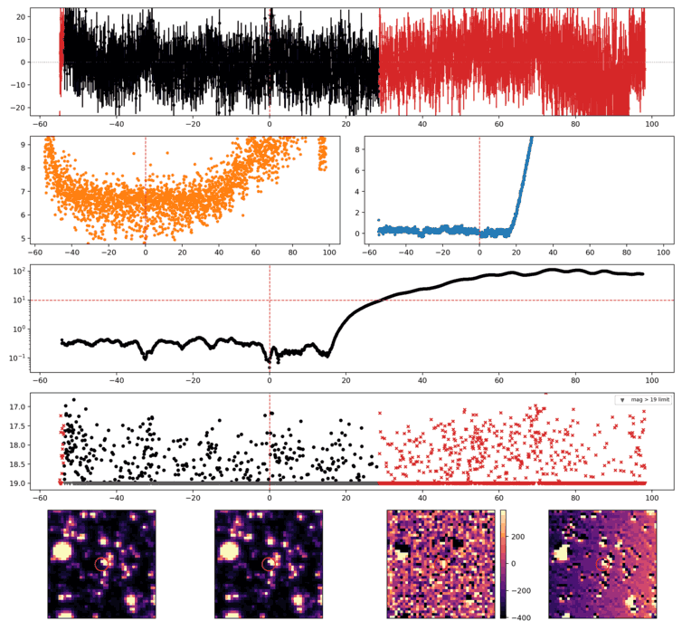
Search centered on refined position (144.1504729, -31.9105711 deg). Gaia coordinates are at J2016.0; proper motions are shown, without epoch propagation. A positional match does not change the candidate flags.
No Gaia DR3 sources found within 5 arcseconds.
Retrieved 2026-11-03T12:24:22.633086+00:00
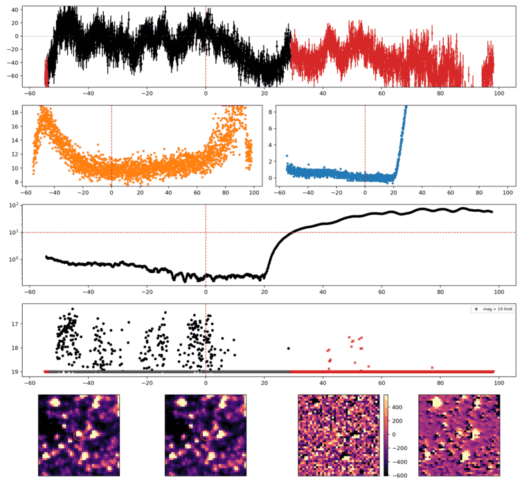
Search centered on refined position (168.0992931, -64.3128280 deg). Gaia coordinates are at J2016.0; proper motions are shown, without epoch propagation. A positional match does not change the candidate flags.
No Gaia DR3 sources found within 5 arcseconds.
Retrieved 2026-11-03T12:24:23.732016+00:00
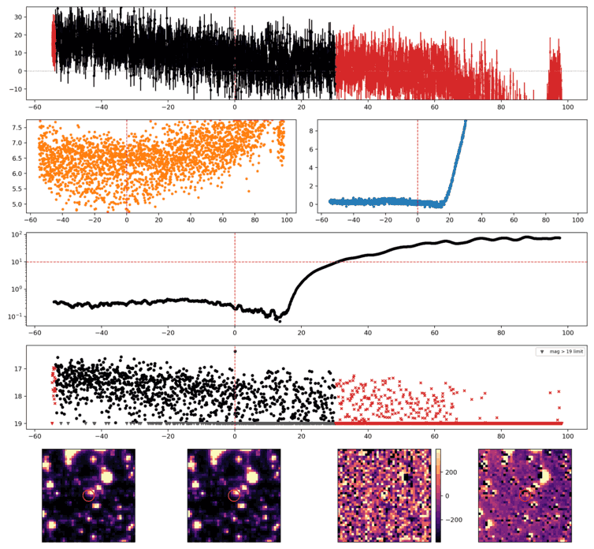
Search centered on refined position (153.1621351, -32.8248250 deg). Gaia coordinates are at J2016.0; proper motions are shown, without epoch propagation. A positional match does not change the candidate flags.
No Gaia DR3 sources found within 5 arcseconds.
Retrieved 2026-11-03T12:24:24.668139+00:00
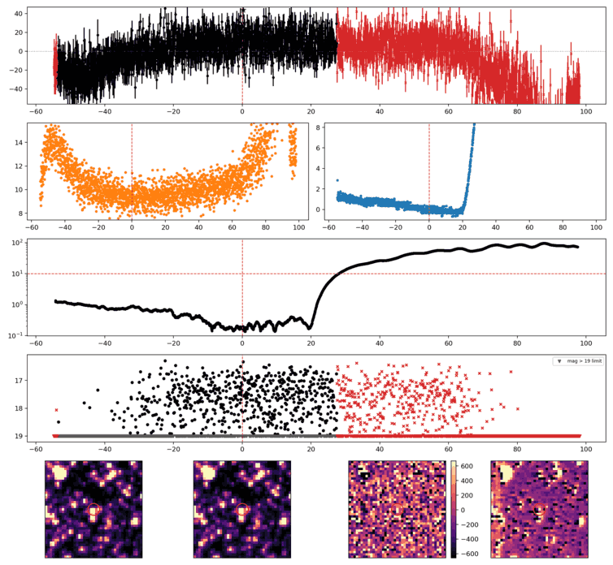
Search centered on refined position (170.4090287, -56.8587282 deg). Gaia coordinates are at J2016.0; proper motions are shown, without epoch propagation. A positional match does not change the candidate flags.
| Source ID / catalog entry | Separation (arcsec) | RA (deg) | Dec (deg) | G (mag) | BP (mag) | RP (mag) | Parallax ± error (mas) | PM RA* ± error (mas/yr) | PM Dec ± error (mas/yr) | RUWE | Variability |
|---|---|---|---|---|---|---|---|---|---|---|---|
| 5339855740196769664 | 1.855 | 170.4097231 | -56.8583797 | 20.595 | 20.402 | 19.211 | -3.148 ± 1.320 | -4.276 ± 1.350 | 3.163 ± 1.070 | 1.185 | VARIABLE |
Retrieved 2026-11-03T12:24:25.565062+00:00
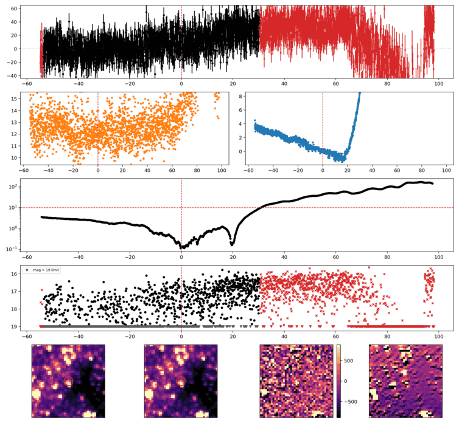
Search centered on refined position (231.2972363, -59.1267486 deg). Gaia coordinates are at J2016.0; proper motions are shown, without epoch propagation. A positional match does not change the candidate flags.
| Source ID / catalog entry | Separation (arcsec) | RA (deg) | Dec (deg) | G (mag) | BP (mag) | RP (mag) | Parallax ± error (mas) | PM RA* ± error (mas/yr) | PM Dec ± error (mas/yr) | RUWE | Variability |
|---|---|---|---|---|---|---|---|---|---|---|---|
| 5876068457098715008 | 2.895 | 231.2987742 | -59.1269026 | 20.864 | 21.437 | 18.630 | — | — | — | — | NOT_AVAILABLE |
| 5876068457097746432 | 3.636 | 231.2961942 | -59.1258919 | 19.733 | 21.032 | 18.590 | 0.079 ± 0.345 | -5.680 ± 0.358 | -3.681 ± 0.362 | 1.019 | NOT_AVAILABLE |
| 5876068457098711424 | 4.313 | 231.2992793 | -59.1273285 | 20.727 | — | — | — | — | — | — | NOT_AVAILABLE |
Retrieved 2026-11-03T12:24:26.753208+00:00
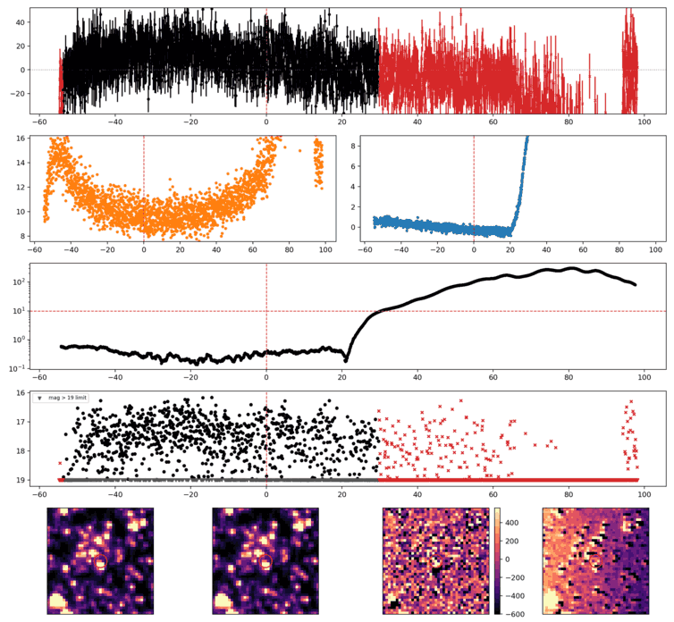
Search centered on refined position (152.3669889, -53.5263421 deg). Gaia coordinates are at J2016.0; proper motions are shown, without epoch propagation. A positional match does not change the candidate flags.
| Source ID / catalog entry | Separation (arcsec) | RA (deg) | Dec (deg) | G (mag) | BP (mag) | RP (mag) | Parallax ± error (mas) | PM RA* ± error (mas/yr) | PM Dec ± error (mas/yr) | RUWE | Variability |
|---|---|---|---|---|---|---|---|---|---|---|---|
| 5356375318278375808 | 2.543 | 152.3681774 | -53.5263387 | 19.423 | 20.429 | 18.417 | 0.136 ± 0.257 | -4.619 ± 0.287 | 2.828 ± 0.273 | 1.038 | NOT_AVAILABLE |
Retrieved 2026-11-03T12:24:27.667103+00:00
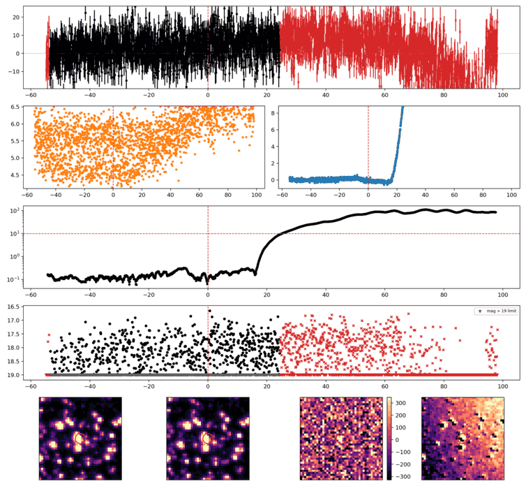
Search centered on refined position (157.9309038, -28.9699121 deg). Gaia coordinates are at J2016.0; proper motions are shown, without epoch propagation. A positional match does not change the candidate flags.
No Gaia DR3 sources found within 5 arcseconds.
Retrieved 2026-11-03T12:24:28.683938+00:00
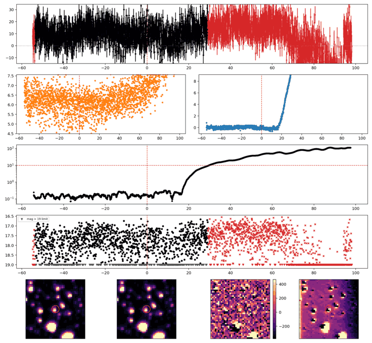
Search centered on refined position (159.7914852, -37.3769560 deg). Gaia coordinates are at J2016.0; proper motions are shown, without epoch propagation. A positional match does not change the candidate flags.
No Gaia DR3 sources found within 5 arcseconds.
Retrieved 2026-11-03T12:24:29.479751+00:00
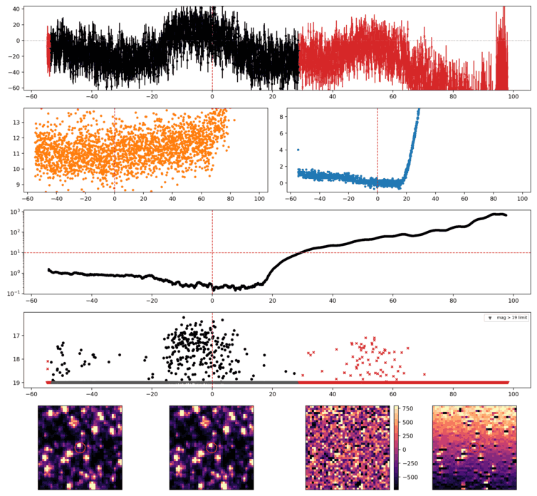
Search centered on refined position (187.7641288, -59.8759142 deg). Gaia coordinates are at J2016.0; proper motions are shown, without epoch propagation. A positional match does not change the candidate flags.
| Source ID / catalog entry | Separation (arcsec) | RA (deg) | Dec (deg) | G (mag) | BP (mag) | RP (mag) | Parallax ± error (mas) | PM RA* ± error (mas/yr) | PM Dec ± error (mas/yr) | RUWE | Variability |
|---|---|---|---|---|---|---|---|---|---|---|---|
| 6058367622347640960 | 3.338 | 187.7658717 | -59.8762221 | 20.666 | 21.373 | 19.787 | 0.128 ± 0.807 | -5.355 ± 1.103 | -0.410 ± 0.910 | 1.006 | NOT_AVAILABLE |
| 6058367622347964544 | 4.245 | 187.7620396 | -59.8764535 | 20.976 | 21.829 | 20.017 | — | — | — | — | NOT_AVAILABLE |
| 6058367622347964928 | 4.818 | 187.7656371 | -59.8770180 | 21.058 | — | — | — | — | — | — | NOT_AVAILABLE |
Retrieved 2026-11-03T12:24:30.268135+00:00
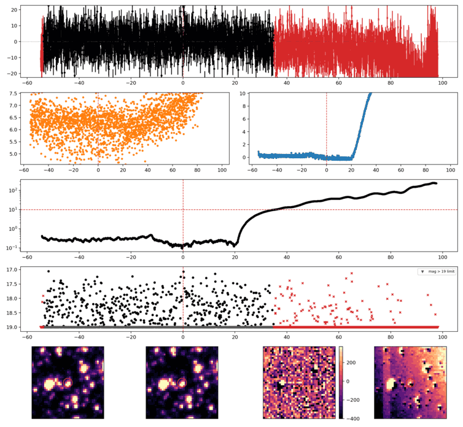
Search centered on refined position (164.1042567, -41.0766438 deg). Gaia coordinates are at J2016.0; proper motions are shown, without epoch propagation. A positional match does not change the candidate flags.
No Gaia DR3 sources found within 5 arcseconds.
Retrieved 2026-11-03T12:24:31.279278+00:00